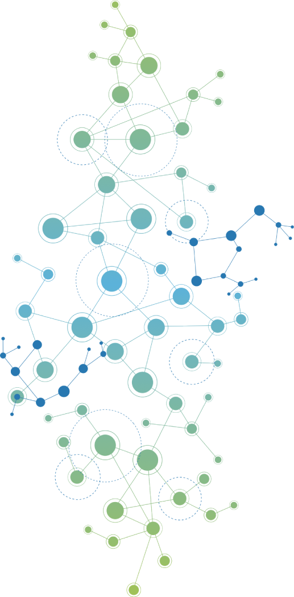
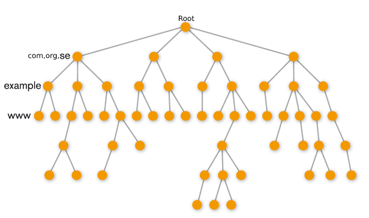
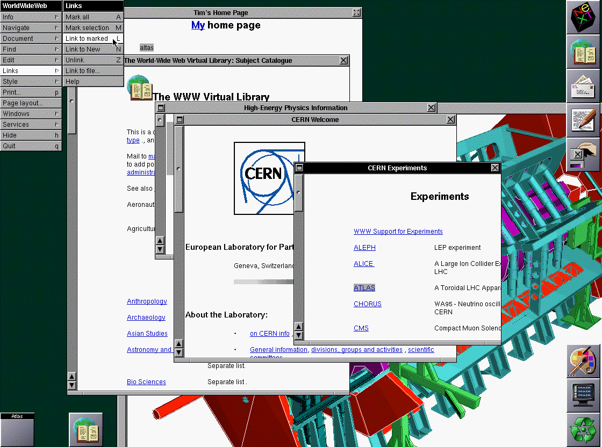
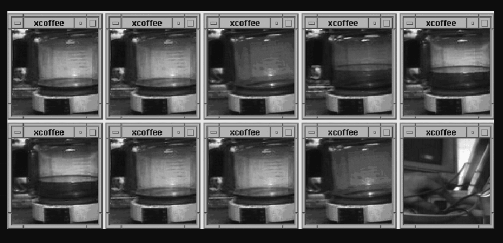
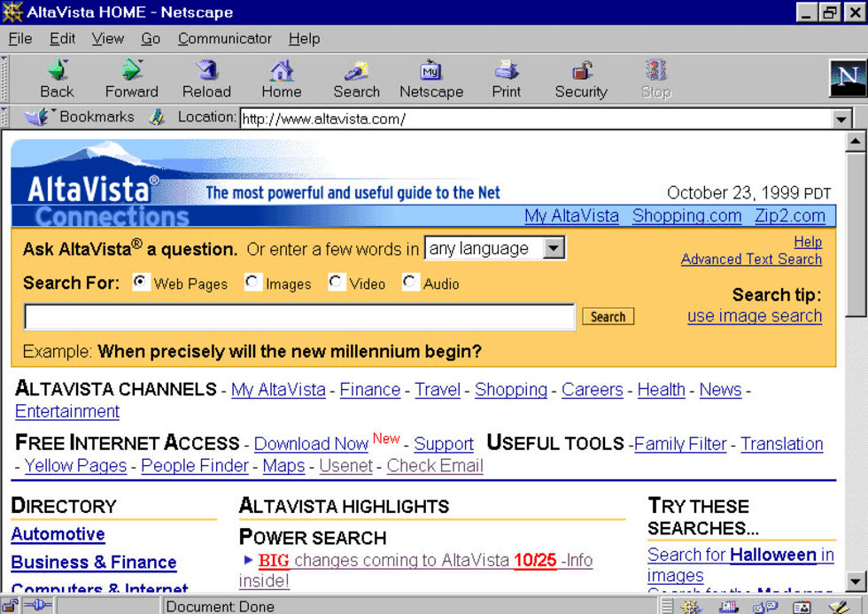
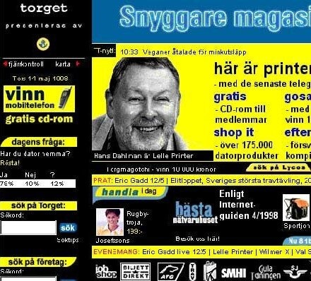

The internet is a developing engineering masterpiece that has connected the whole world to a network where every form of information is accessible to everyone.
The internet is not an old innovation and was created recently. The development of the world wide web has progressed through Web 1.0, Web 2.0 and Web 3.0.
Before World Wide Web
1969 Arpanet
In the year 1969, the world's first transmitted message between two separate computers was sent in the USA. The message was supposed to be "Login" although the only part that succeded in transmission was "Lo" because the system crashed during the transmission cutting the rest of the word.
1970 Development
At the beginning of the 70s, the world's first email was sent between two computers sitting next to each other. The mail was sent by Ray Tomlinson who sent the email to himself. This, was the start of the Swedish digitalization development and was inspired by Arpanet.
International Network
In 1973, Arpanet had became an international network because of the connection between Norway and Sweden. Arpanet was originally only used for the American defense. This created the internet, but it still took two whole decades till the first browser comes.
Safe Environment
TCP/IP
To create a safe environment for the internet where one can be sure that information can be transferred quickly and efficiently by the use of TCP/IP. It was built by the DARPA which stands for "Defense Advanced Research Projects Agency.
Darpa is an american federal goverment which organized USA's defense department. Its mission is to conduct and finance research with the aim of developing technology for military purposes. Therefore it was important for the information to be able to be sent safely.
Protocol
TCP/IP stands for "Transmission Control Protocol/Internet Protocol and is several rules that the interconnected devices have to follow when communicating with each other. It defines how the data is exchanged for both ends of the line while also identifying the data so it can be broken down into small packets for it to be addressed, transmitted, and routed to the arrival destination.
IP Adress
One may have heard of an IP (Internet Protocol address) address before. This represents the route each packet has to take to reach its final destination. Each gateway (A gateway is a network node that connects two different networks) computer on the internet has its own ip adress that represents the network. Although this also comes with a few disadvantages which are spoken more about in the disadvantages tab.
Common TCP/IP protocols
Hypertext Transfer Protocol (HTTP) handles the communication between a web server and a web browser.
HTTP Secure handles secure communication between a web server and a web browser.
File Transfer Protocol handles the transmission of files between computers.
192.168.1.214 is an example of an IPv4 adress
fe80::25h3:Sad1:c468:fe56 is an example of an IPv6 adress

The development of the internet in Sweden
Late 70s
During the 70s, the development of the precursors to today's internet kept growing, especially in Sweden and USA. At the end of the 70s, a Swedish author and professor of computer science at Stockholm University, Sven Jacob Arved Palme created together with Torgny Tholerus, a Swedish programmer, managed to build the KOM-system in 1978.
Kom-System
In 1978, for the first time, hundreds of Swedes, both researchers and private individuals, could connect to a computer and write to each other in so-called "meetings". The KOM system, an early social network is born.
Jacob
Torgny
The 1980s
Multiconnection
At the beginning of the 80s, the roleplaying game MUD (Multi-user dungeons, Multi-user dimension) turned out to be a success. It was textbase and in real-time on the internet and the players play their roles in a defined world. Considering the game was multiplayer, it was quite spectacularfor its time.
BBS
Before the Internet, there were electronic bulletin boards called BBS. With these one could suddenly communicate with other people who have accessed the same database. To do this one just had to dial a number (corresponding to the specific database) and this would connect one to another computer.
But only one can fit in at a time unless the computer has more phone numbers. BBS (Bulletin Board System) is a community where one can discuss with others, send internal messages, and download files. One can see an example of a Swedish one below.
The BBS system was quite a hassle when trying to connect to databases which was why in 1983 the domain system (DNS) was created. This made it much easier to surf the web or to reach any sort of destination on the internet. Instead of having to type in the destination's IP address, one can now with the help of DNS search for a domain instead. Without this, we would have to have a whole registry with the IP addresses of everything on the internet. The structure is shown below. It goes from root (database) to domain (.com = company, .org = organisation) then to the name of the website and then through the security measures of the world wide web (WWW).


The Expansion Of The Internet
Start of the 90s
By the start of the 1990s, the first browser was created with Objective-C by Tim Berners-Lee. It was the only way to view the web. It used to be that downloading files, viewing files, and sharing them required one to type specific codes to connect to databases. The new and innovative browser made it much easier to browse the web. The browser was later renamed to Nexus in order to avoid confusion that the world wide web is an abstract information page instead of a browser.
GSM, Phone breakthrough
It wasn’t until 1992 that the internet spread into the well-familiar phones we all know today. Except, back then they were a bit different than what’s common nowadays. Click here to view a picture of it. Nokia was the mass producer of the GSM empire and they were the first to create a phone which could send SMS and send data traffic from one phone to another. They were also used to surf the web and send pictures and phone others.
Enjoyable Experience, Mosaic
In 1993 the first-ever graphical browser was launched, Mosaic. It brought the possibility of pictures, videos, and sound into the world wide web. It's told to be the browser that made surfing the web enjoyable. Compared to the text-based website which was quite dull and basic. Click here to see the first version of the browser.
Connecting With Communities
WWW Tourist Attraction
No one owns the internet, but it is a contribution of everyone that chooses to do so. Nobody controls it and one shouldn’t have to ask to upload a website. Although this doesn’t mean that there aren’t any regulations one must follow.
Take the online sensation and tourist attraction “xcoffee” which was a coffee machine. A live video was sent from the Computer Laboratory at the University of Cambridge in England of the coffee maker which created the world's first webcam.
The purpose of this was to help the people working inside to know when there was coffee to be served. This was seen as international notoriety as a feature of the expanding and evolving World Wide Web. Sadly this coffee maker retired in 2001 but pictures from the live video can be found to the right.
Smart Investment
In 1994 Sweden, the politicians decided to invest strongly into the new evolving age of IT with the creation of the internet. Approximately one billion Swedish crowns were invested into schools to give the resources to teach the students about IT and the internet.


Community
Algonet
In 1994 the ability for private people to be able to connect to the internet for a much cheaper price and in a much more efficient way. Ragnar Lönn created Algonet which was one of the first services that offer modem connection to private individuals The number of users grew fast so in the year 1995 they had to stop selling for a period to be able to handle the number of new users.
Aftonbladet
It was around this time that the first ever Swedish newspaper appeared on the internet. Aftonbladet quickly became one of Sweden's most visited websites. The Swedish government also took a part of the newly found world and emailed every single Swedish user online the vote results. Clich here to view a picture of them.
Predecessor to Google
The early predecessor to google quickly became the most popular search motor in the 90s. The company Digital Equipment Corporation in Palo Alto California had an idea of creating a search engine that could quickly and efficiently search websites.
With this, one could find better results due to the ability to search for every word on the website, even phrases, and sentences. Furthermore, it also featured support for multiple languages and also allowed for a picture, sounds, and videos to be searched for. On the first day, 300 thousand searches are made and years later the number had risen to 80 million searches in one day.
Joining the excitement
Annica Tigers
Maud Annika Tigers was a Swedish programmer who helped form the collection of websites that were bound to come due to her creating an HTML guide so people could learn and make their own websites. The reason for this was that she wanted to make her own website but she couldn't find any good information and so she got creative. She also was the first in Sweden to write a diary and became Sweden's first blogger.
Family, Pets, Band Websites
When the internet grew and Annica came out with her HTML guide, many Swedes took the initiative and the chance to make their own websites. They consisted of both personal websites about themselves or their pets. There were also informational websites, created for bands, cars, trucks, and so on. There weren't any real rules saying how a website should look and so the websites looked a bit funky
Blocket
Blocket is every swede's most commonly used shopping website when searching for a quick and easy purchase or a way to sell stuff. Before Blocket, people relied on newspaper ads or bulletin boards. This newly founded website created by Henrik Nordström revolutionalized the Swedish market and made it much easier and cheaper to buy or sell. At first, it only took part in certain regions but soon expanded to the whole of Sweden.

End of the 90s
Complaining About Traffic
As the number of users on the internet, the traffic increased drastically due to the internet becoming the year Christmas present. But due to the many unknown souls not knowing how to use the internet. As a result, multiple introduction videos were made. There were also videos made about the danger of the internet.
For example this video is about a woman who is about to go on a date with a man she met online. But due to the slow loading times, only a part of the self-portrait the man sent could be loaded. The woman got fooled, believing that she was going out with a hot man, but when she left, the rest of the picture loaded and one got the see the true man she was meeting. This also brought with a term called catfishing meaning pretending to look like someone else. The video was a video ad for a firm by the name of Telenordia and the video had the slogan “Choose a faster internet”.
Hasta la vista Altavista
Google
In 1998 a company known over the whole world was created as a research project at Stanford University. Two Ph.D. students invented an algorithm to organize all the web's information. The students were Larry Page and Sergey Brin. Past search engines search for how many times a certain word appeared on a website. Meanwhile, google used a system called PageRank that lists websites according to how many people have linked to them.
BackRub
Google was originally called BackRub but changed namer later on to Google. Although Google was just misspelled from Googol which means 10 100. It quickly became the world's most popular choice and passes Altavista in 2001. It was quick, clean, and efficient.
Larry
Sergey
Wireless Connection
Wifi
In 1999 the internet was night in the air flying around without us being able to see it. In the past, the so-called "wireless" internet they had before was connected through cables and radios, and receivers. There were many different methods but no one could find the right fit. A dutch man by the name of Vic Hayes creates the Wifi Alliance where the internet should exist without cables.
They did this by using a computer's wireless adapter which brings in the information and translates it into a radio signal. Then the signal can be sent using an antenna and then a router receives the signal and decodes it into data again. Therefore the further away one is from their router, the weaker the signal due to the extended length the signals have to travel
Wap
Wireless Application Protocol made it possible for phones to access a kind of slimmed-down the internet on phones. The first phone that could handle this was the Nokia 7110 created in 1999 which could only handle data transfers from 9.6kbit/s. Our 4G is approximately 50 thousand times faster and one couldn't even surf the web while on a call with someone. Instead of using the term, surfing, they used wapping.
The End
Click any of the boxes below to find information about the internet